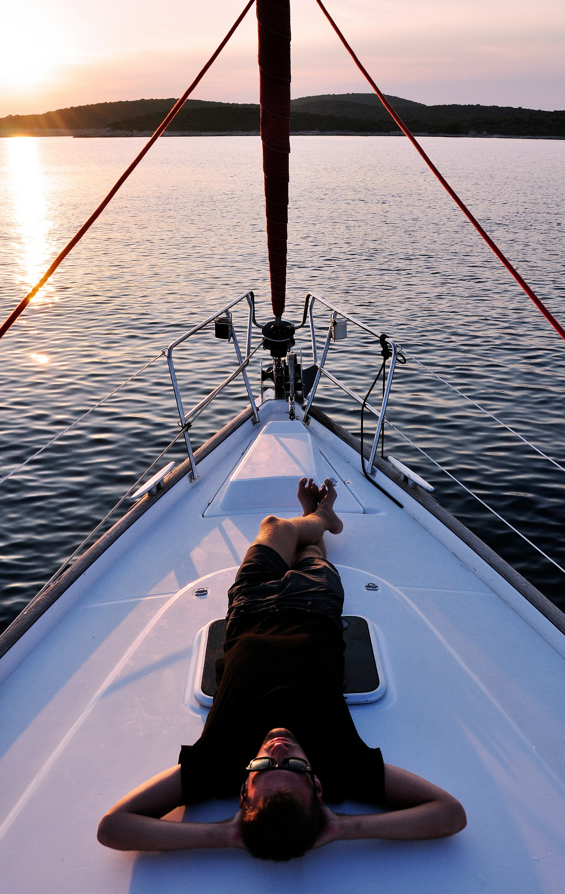

私の経験
I always try new things to expand my posibilities

Traveling

Skateboard

大学4年間で学んだこと
アメリカに留学を目標にTOEFLの勉強を行ってきました。点数は89点で現在英会話力に自信があります。現在英検1級合格に向けて学習中。
主に、Ruby On Railsを学習してきました。1年間プログラミングメンターとしてRubyを指導してきました。 現在はHTML,CSS,Javascriptの知識やウェブ制作を通してスキルアップを試みています。
VRのベンチャーにインターンシップとして務めていました。主な業務としては、海外のVRの企業とのローカライゼーション、 技術面でのコミュニケーションの円滑化。英語を使って行なっていました。
I always try new things to expand my posibilities
Experience is not what happens to you; it's what you do with what happens to you.

私は計画性と時間厳守に強みを持っています。明確な目標を設定し、効果的な計画を立て、その計画に従って行動することで、効率的かつ効果的に仕事を進め、期限を厳守します。

常に自分磨きへの意欲を持ち、学習に積極的に取り組んでいます。新しい知識を吸収し、スキルの向上を追求することで、個人としての成長を重視し、持続的なモチベーションを保っています。

プロジェクトリーダーの経験から、リーダーシップと仲間とのコミュニケーションに自信があります。的確な指導と柔軟なコミュニケーションを通じて、チームメンバーとの協力を促進し、共に目標達成に向けて努力しています。